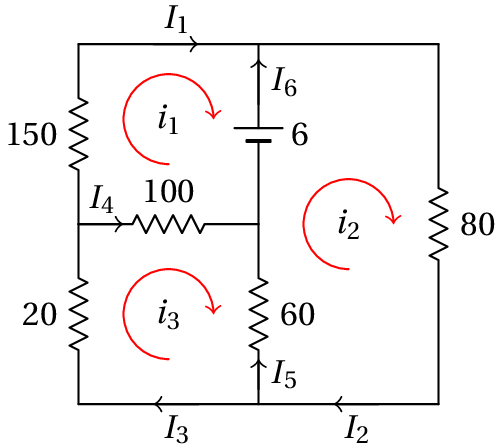

No circuito da figura, determine quais das fontes de força eletromotriz fornecem ou absorvem energia e calcule a potência fornecida, ou absorvida, por cada uma.

Usando unidades de kΩ para as resistências e V para as voltagens, as correntes obtidas estarão em mA. Definem-se duas correntes de malha e , que podem ser no sentido dos ponteiros do relógio:
Como tal, as equações das malhas são o seguinte sistema:
Multiplicando os dois lados da equação pela inversa da matriz que aparece no lado esquerdo, obtêm-se as correntes de malha:
No Maxima o resultado pode obter-se com o seguinte comando:
Os dois valores positivos obtidos indicam que os sentidos das duas correntes de malha sim é o que foi arbitrado (dos ponterios do relógio). A corrente que passa pela f.e.m. de 6 V é a própria corrente de malha = 0.8737 mA, que atravessa a fonte de 6 V do elétrodo negativo para o positivo; como tal, essa fonte fornece 6×0.8737 = 5.24 mW.
Na fonte de 5 V, a corrente é de cima para baixo, porque , e tem intensidade mA. Essa fonte também fornece potência (a corrente atravessa do elétrodo negativo para o positivo) de valor 5×0.78515 = 3.93 mW.
Determine a potência dissipada em cada resistência no circuito e a potência fornecida pela f.e.m. Verifique que a potência fornecida pela f.e.m. é igual à soma das potências dissipadas em todas as resistências.

Há três correntes de malha, , e , que podem ser definidas no sentido dos ponteiros do relógio (unidades SI):
As equações das três malhas são:
E a solução desse sistema linear é:
No Maxima o sistema pode ser resolvido armazenando as 3 correntes de malha numa lista, por meio do seguinte comando:
O produto da matriz inversa pela lista das voltagens, que dá uma matriz com as correntes de malha, foi convertida em lista usando a função list_matrix_entries.
Observando o diagrama acima, conclui-se que a lista das correntes no 6 ramos, … , nos sentidos escolhidos, têm a seguinte relação com as correntes das malhas:
O sinal negativo de indica que é no sentido oposto ao que foi indicado no diagrama. As respetivas resistências nos seis ramos são:
A potência dissipada em calor em cada uma dessas resitências é . Como tal, a lista das seis potências dissipadas em calor nos seis ramos é:
No ramo 6 não há potência dissipada em calor porque não há resistência. A resistência de 150 Ω dissipa 82.13 mW, a resistência de 80 Ω dissipa 151.4 mW, a resistência de 20 Ω dissipa 45 µW, a resistência de 100 Ω dissipa 62 mW e a resistência de 60 Ω dissipa 105.8 mW.
A potência fornecida pela fonte é W. Para conferir que é igual à potência total dissipada nas resistências, somam-se as potências dissipadas nos seis ramos, ou seja, somam-se os elementos da lista no Maxima, que pode ser feito aplicando o operador "+" à lista:
No circuito representado no diagrama, os dois condensadores estão inicialmente descarregados. Determine: (a) As correntes iniciais nas resistências e condensadores. (b) As cargas finais nos condensadores, indicando as suas polaridades.

(a) No instante inicial, em que os condensadores descarregados atuam como curto-circuitos, o circuito equivalente é o seguinte

A resistência de 1.2 kΩ não foi representada, porque o equivalente dessa resistência em paralelo com o condensador de 68 nF (curto-circuito com resistência nula) é uma resistência nula (curto-circuito).
Arbitrando potencial nulo no ponto onde o elétrodo negativo da f.e.m. de 1.5 V está em contacto com a resistência de 150 Ω, o elétrodo negativo da f.e.m. de 6 V também terá potencial nulo, porque o potencial em todos os pontos no curto-circuito à direita do circuito é o mesmo. Como tal, o potencial no elétrodo positivo da f.e.m. de 1.5 V será 1.5 V, e o potencial do elétrodo positivo da f.e.m. de 6 V será 6 V, tal como mostra o diagrama acima.
Na resistência de 150 Ω a diferença de potencial é 6 V e a corrente será 6/150 = 0.04 A (de esquerda para direita), que é a mesma corrente no condensador de 82 nF (de direita para esquerda). Na resistência de 200 Ω, a diferença de potencial é 1.5 V e a corrente 1.5/200 = 0.0075 A (de cima para baixo). Pela regra dos nós, a corrente no condensador de 68 nF é então, A (de cima para baixo). Na resistência de 1.2 kΩ a corrente é nula, porque a diferença de potencial é nula.
(b) No estado final, quando os condensadores completamente carregados são equivalentes a interruptores abertos, o circuito equivalente é o seguinte
Observe-se que a corrente na resistência de 150 Ω é nula, porque não tem percurso por onde circular. Como tal, o potencial nos dois extremos dessa resistência é o mesmo e pode arbitrar-se que é nulo, como mostra o diagrama anterior. O potencial no elétrodo negativo da f.e.m. de 6 V será então igual a V e o potencial no elétrodo positivo da f.e.m. de 1.5 V será igual a 1.5 V.
No ponto comum às resistências de 200 Ω e 1.2 kΩ o valor do potencial, no diagrama, deverá ser obtido pela lei de Ohm. Essas duas resistências, que estão em série, são equivalentes a uma única resistência de 1400 Ω entre os pontos onde o potencial é 0 e 1.5 V; como tal, a corrente através dessas duas resistências é A, e o valor de é:
Observa-se então que no condensador de 82 nF a carga é positiva na armadura do lado direito (maior potencial), no condensador de 68 nF a carga é negativa na armadura de cima (menor potencial) e os valores das cargas nesses dois condensadores são os seguintes:
(a) Determine a intensidade e sentido da corrente no condensador, no instante inicial em que está descarregado. (b) Determine a carga final do condensador, indicando a sua polaridade.

(a) O circuito equivalente no estado inicial, com o condensador em curto-circuito, é o seguinte
Usando o método das malhas, com três correntes de malha no sentido contrário aos ponteiros do relógio, o sistema de equações do circuito é então,
A solução desse sistema é , e . A corrente através do condensador é , para cima, ou seja, 0.00478 A, para cima.
(b) O circuito equivalente no estado final, com o condensador como interruptor aberto, é o seguinte

Onde as resistências de 470 Ω e 330 Ω estão em série entre C e D, e a resistência equivalente ficará em paralelo com a resistência de 560 Ω, conduzindo aos seguintes circuitos equivalentes mais simples:

No circuito do lado direito, a corrente é igual a
e a voltagem entre os pontos D e C é:
No circuito do lado esquerdo, a corrente através da resistência de 800 Ω, (de esquerda para direita) é:
Que é a mesma corrente que passa de C para D no circuito original. Nesse circuito original, a diferença de potencial entre os dois pontos onde está ligado o condensador é igual a,
O resultado positivo indica que a carga é positiva na armadura de baixo (maior potencial em B do que em A) e negativa na armadura de cima. Finalmente, a carga no condensador calcula-se a partir da sua voltagem